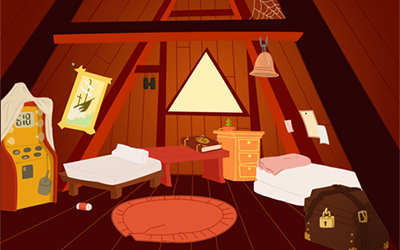

Portfolio

Island Exploration
An HTC Vive research project to develop a new way for users to explore a virtual space larger than their physical space.

Lawn Darts VR
A simple Oculus Rift (DK2) game where players make their last stand against mobs of angry parents trying to ban the game of lawn darts.

Legends of the Hidden Temple
A game show experience based on the television show, Legends of the Hidden Temple. Built as part of Sigma Phi Epsilon's booth for the CMU Spring 2016 Carnival.

Character Rigs
Two separate character rigs made as part of the Character Rigging for Production course at Carnegie Mellon, both with complete FK and IK controls.

The Attic
A digital playground of two children's attic, where players can interact with objects throughout the scene and try to uncover the mystery of the children that lived there.